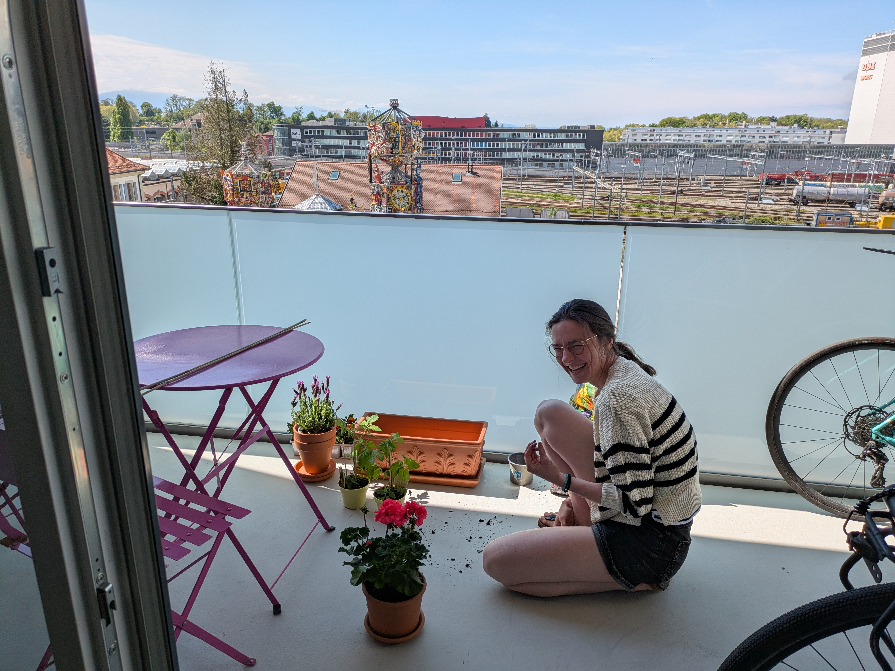

Le jardin de Laure

Que faut-il pour reproduire cette terrasse Versaillaise?
- Surface nécessaire: une ptite terrasse avec qqes vélos dessus
- Plein d'amour (pour son doudou)
- Un papa qui jardine comme personne (pour Auchan)
Et ne surtout pas oublier une oeuvre d'art abandonée par la ville d'Aubagne en fond.